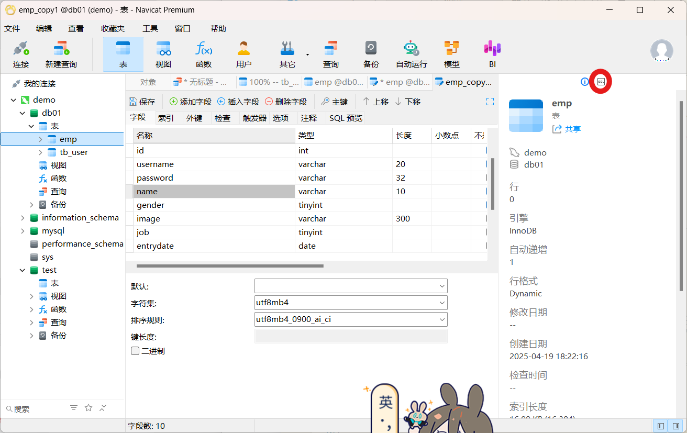
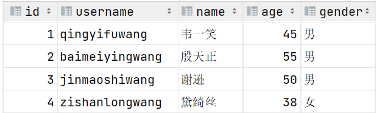
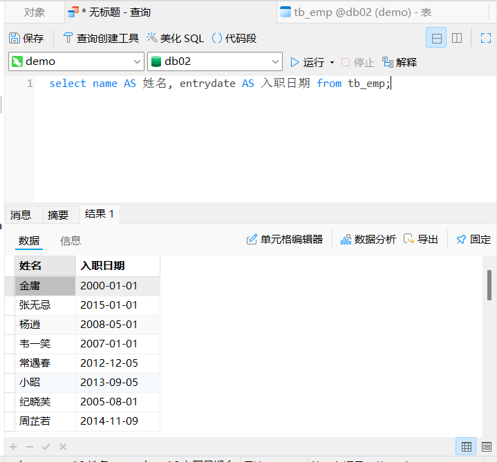
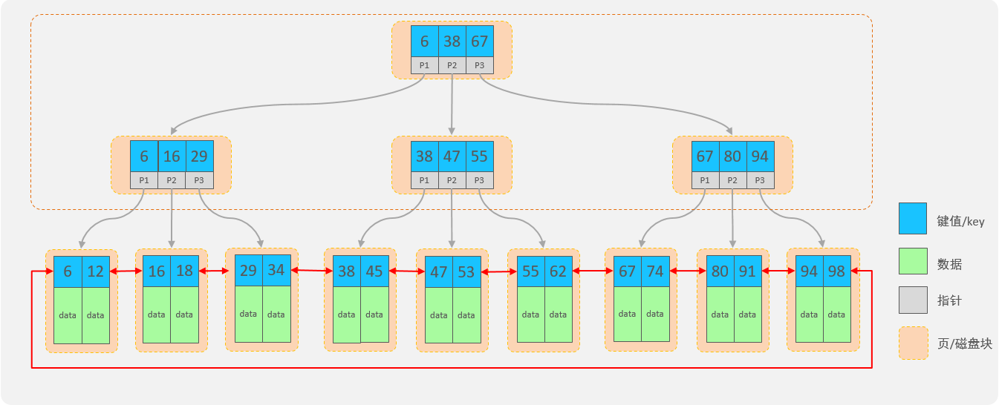

刚学没几周就因为忘记了MySQL的密码卡进度实在令人忍俊不禁
因为在目前阶段没有前端配合做出的成果，所以学得很累zzz
Mysql忘记登录密码的解决步骤
哈哈（流汗
VSCODE连接MySQL
添加拓展MySQL,资源管理器里按+连接
在MySQL终端输入ALTER USER 'root'@'localhost' IDENTIFIED WITH mysql_native_password BY 'password';
root、password 分别为数据库账户，密码
原因：登录数据库的客户端跟mysql8.0不兼容了，mysql8.0密码认证采用了新的密码格式
软件安装
Navicat
提取码：3ciw
Mysql
MySQL :: Download MySQL Installer
MySQL启动
services.msc
net start mysqlnet stop mysql
客户端连接
① MySQL提供的客户端
② mysql [-h 127.0.0.1] [-P 3306] -u root -p(1234) <-()默认密码
(需要配置环境变量)([-h 127.0.0.1] [-P 3306]可省略)
- 关系型数据库RDBMS: 建立在关系模型基础上，有多张相互连接的二维表组成的数据库。
SQL
SQL的通用语法
以分号结尾
MySQL数据库的SQL雨具不区分大小写，关键字建议使用大写
注释: -- 或 # 多行注释使用 /* */
SQL分类
DDL
查询数据库
关于表结构的查询操作，工作中一般都是直接基于图形化界面操作。
查询所有数据库：
1 | show databases; |
查询当前数据库：
1 | select database(); |
查看指定表结构
1 | desc 表名 ;#可以查看指定表的字段、字段的类型、是否可以为NULL、是否存在默认值等信息 |
查询指定表的建表语句
1 | show create table 表名 ; |
Navicat中:

创建数据库
语法：
1 | create database [ if not exists ] 数据库名; |
==注意：在同一个数据库服务器中，不能创建两个名称相同的数据库，否则将会报错。==
使用数据库
语法：
1 | use 数据库名 ; |
删除数据库
语法：
1 | drop database [ if exists ] 数据库名 ; |
表创建
语法
1 | create table 表名( |
约束
| 约束 | 描述 | 关键字 |
|---|---|---|
| 非空约束 | 限制该字段值不能为null | not null |
| 唯一约束 | 保证字段的所有数据都是唯一、不重复的 | unique |
| 主键约束 | 主键是一行数据的唯一标识，要求非空且唯一 | primary key |
| 默认约束 | 保存数据时，如果未指定该字段值，则采用默认值 | default |
| 外键约束 | 让两张表的数据建立连接，保证数据的一致性和完整性 | foreign key |
关键字：auto_increment（自动增长）
1 | create table tb_user ( |

数值类型
| 类型 | 大小 | 有符号(SIGNED)范围 | 无符号(UNSIGNED)范围 | 描述 |
|---|---|---|---|---|
| TINYINT | 1byte | (-128，127) | (0，255) | 小整数值 |
| SMALLINT | 2bytes | (-32768，32767) | (0，65535) | 大整数值 |
| MEDIUMINT | 3bytes | (-8388608，8388607) | (0，16777215) | 大整数值 |
| INT/INTEGER | 4bytes | (-2147483648，2147483647) | (0，4294967295) | 大整数值 |
| BIGINT | 8bytes | (-2^63，2^63-1) | (0，2^64-1) | 极大整数值 |
| FLOAT | 4bytes | (-3.402823466 E+38，3.402823466351 E+38) | 0 和 (1.175494351 E-38，3.402823466 E+38) | 单精度浮点数值 |
| DOUBLE | 8bytes | (-1.7976931348623157 E+308，1.7976931348623157 E+308) | 0 和 (2.2250738585072014 E-308，1.7976931348623157 E+308) | 双精度浮点数值 |
| DECIMAL | 依赖于M(精度)和D(标度)的值 | 依赖于M(精度)和D(标度)的值 | 小数值(精确定点数) |
1 | 示例: |
字符串类型
| 类型 | 大小 | 描述 |
|---|---|---|
| CHAR | 0-255 bytes | 定长字符串(需要指定长度) |
| VARCHAR | 0-65535 bytes | 变长字符串(需要指定长度) |
| TINYBLOB | 0-255 bytes | 不超过255个字符的二进制数据 |
| TINYTEXT | 0-255 bytes | 短文本字符串 |
| BLOB | 0-65 535 bytes | 二进制形式的长文本数据 |
| TEXT | 0-65 535 bytes | 长文本数据 |
| MEDIUMBLOB | 0-16 777 215 bytes | 二进制形式的中等长度文本数据 |
| MEDIUMTEXT | 0-16 777 215 bytes | 中等长度文本数据 |
| LONGBLOB | 0-4 294 967 295 bytes | 二进制形式的极大文本数据 |
| LONGTEXT | 0-4 294 967 295 bytes | 极大文本数据 |
char 与 varchar 都可以描述字符串，char是定长字符串，指定长度多长，就占用多少个字符，和字段值的长度无关 。而varchar是变长字符串，指定的长度为最大占用长度 。相对来说，char的性能会更高些。
1 | 示例： |
日期时间类型
| 类型 | 大小 | 范围 | 格式 | 描述 |
|---|---|---|---|---|
| DATE | 3 | 1000-01-01 至 9999-12-31 | YYYY-MM-DD | 日期值 |
| TIME | 3 | -838:59:59 至 838:59:59 | HH:MM:SS | 时间值或持续时间 |
| YEAR | 1 | 1901 至 2155 | YYYY | 年份值 |
| DATETIME | 8 | 1000-01-01 00:00:00 至 9999-12-31 23:59:59 | YYYY-MM-DD HH:MM:SS | 混合日期和时间值 |
| TIMESTAMP | 4 | 1970-01-01 00:00:01 至 2038-01-19 03:14:07 | YYYY-MM-DD HH:MM:SS | 混合日期和时间值，时间戳 |
1 | 示例: |
修改
关于表结构的修改操作，工作中一般都是直接基于图形化界面操作。
添加字段
1 | alter table 表名 add 字段名 类型(长度) [comment 注释] [约束]; |
修改数据类型
1 | alter table 表名 modify 字段名 新数据类型(长度); |
1 | alter table 表名 change 旧字段名 新字段名 类型(长度) [comment 注释] [约束]; |
删除字段
1 | alter table 表名 drop 字段名; |
修改表名
1 | rename table 表名 to 新表名; |
删除
删除表语法：
1 | drop table [ if exists ] 表名; |
DML
添加数据（INSERT）
insert语法：
向指定字段添加数据
1
insert into 表名 (字段名1, 字段名2) values (值1, 值2);
全部字段添加数据
1
insert into 表名 values (值1, 值2, ...);
批量添加数据（指定字段）
1
insert into 表名 (字段名1, 字段名2) values (值1, 值2), (值1, 值2);
批量添加数据（全部字段）
1
insert into 表名 values (值1, 值2, ...), (值1, 值2, ...);
e.g.
1 | -- 因为设计表时create_time, update_time两个字段不能为NULL，所以也做为要插入的字段 |
修改数据（UPDATE）
update语法：
1 | update 表名 set 字段名1 = 值1 , 字段名2 = 值2 , .... [where 条件] ; |
案例1：将tb_emp表中id为1的员工，姓名name字段更新为’张三’
案例2：将tb_emp表的所有员工入职日期更新为’2010-01-01’
删除数据（DELETE）
delete语法：
1 | delete from 表名 [where 条件] ; |
案例1：删除tb_emp表中id为1的员工
案例2：删除tb_emp表中所有员工
DQL
查询关键字：SELECT
查询操作是所有SQL语句当中最为常见，也是最为重要的操作。在一个正常的业务系统中，查询操作的使用频次是要远高于增删改操作的。
语法
DQL查询语句，语法结构如下：
1 | SELECT |
基本查询
在基本查询的DQL语句中，不带任何的查询条件，语法如下：
查询多个字段
1
select 字段1, 字段2, 字段3 from 表名;
查询所有字段（通配符）
1
select * from 表名;
*号代表查询所有字段，在实际开发中尽量少用（不直观、影响效率）设置别名
1
select 字段1 [ as 别名1 ] , 字段2 [ as 别名2 ] from 表名;

别名中有特殊字符时，使用’’或””包含
去除重复记录
1
select distinct 字段列表 from 表名;
条件查询
语法：
1 | select 字段列表 from 表名 where 条件列表 ; -- 条件列表：意味着可以有多个条件 |
常用的比较运算符如下:
| 比较运算符 | 功能 |
|---|---|
| > | 大于 |
| >= | 大于等于 |
| < | 小于 |
| <= | 小于等于 |
| = | 等于 |
| <> 或 != | 不等于 |
| between … and … | 在某个范围之内(含最小、最大值) |
| in(…) | 在in之后的列表中的值，多选一 |
| like 占位符 | 模糊匹配(_匹配单个字符, %匹配任意个字符) |
| is null | 是null |
常用的逻辑运算符如下:
| 逻辑运算符 | 功能 |
|---|---|
| and 或 && | 并且 (多个条件同时成立) |
| or 或 ¦¦ | 或者 (多个条件任意一个成立) |
| not 或 ! | 非 , 不是 |
是||，但是这个hexo太小杯了一直显示|/ |/ |,受不了了
⚠️注意：查询为NULL的数据时，不能使用
= null
2
3
from tb_emp
where job is not null ; -- where job is null ;
where entrydate>='2000-01-01' and entrydate<='2010-01-01';
<=>where entrydate between '2000-01-01' and '2010-01-01';
2
3
4
5
6
from tb_emp
where name like '__'; # 通配符 "_" 代表任意1个字符
# 这里表示名字有两个字的
...
where name like '张%'; # 通配符 "%" 代表任意个字符（0个 ~ 多个）
聚合函数
语法：
1 | select 聚合函数(字段列表) from 表名 ; |
注意 : 聚合函数会忽略空值，对NULL值不作为统计。
常用聚合函数：
| 函数 | 功能 |
|---|---|
| count | 按照列去统计有多少行数据 (如果这一列中有null的行，该行不会被统计在其中。) |
| max | 计算指定列的最大值 |
| min | 计算指定列的最小值 |
| avg | 计算指定列的平均值 |
| sum | 计算指定列的数值和，如果不是数值类型，那么计算结果为0 |
案例1：统计该企业员工数量
2
3
4
5
6
7
8
9
10
select count(id) from tb_emp;-- 结果：29
select count(job) from tb_emp;-- 结果：28 （聚合函数对NULL值不做计算）
# count(常量)
select count(0) from tb_emp;
select count('A') from tb_emp;
# count(*) 推荐此写法（MySQL底层进行了优化）
select count(*) from tb_emp;
分组查询
语法：
1 | select 字段列表 from 表名 [where 条件] group by 分组字段名 [having 分组后过滤条件]; |
案例：查询入职时间在 ‘2015-01-01’ (包含) 以前的员工 , 并对结果根据职位分组 , 获取员工数量大于等于2的职位
1 | select job, count(*) |
注意事项:
• 分组之后，查询的字段一般为聚合函数和分组字段，查询其他字段无任何意义
• 执行顺序：where > 聚合函数 > having
where与having区别
- 执行时机不同：where是分组之前进行过滤，不满足where条件，不参与分组；而having是分组之后对结果进行过滤。
- 判断条件不同：where不能对聚合函数进行判断，而having可以。
排序查询
语法：
1 | select 字段列表 |
排序方式：
- ASC ：升序（默认值）
- DESC：降序
2
3
4
from tb_emp
order by entrydate; -- 默认就是ASC（升序）
-- = order by entrydate ASC;
2
3
from tb_emp
order by entrydate ASC , update_time DESC;注意事项：如果是多字段排序，当第一个字段值相同时，才会根据第二个字段进行排序
分页查询
分页查询语法：
1 | select 字段列表 from 表名 limit 起始索引, 查询记录数 ; |
e.g.
2
3
4
5
6
from tb_emp
limit 5; -- 如果查询的是第1页数据，起始索引可以省略，直接简写为：limit 条数
-- 查询 第3页 员工数据, 每页展示5条记录
limit 10 , 5; -- 从索引10开始，向后取5条记录计算公式 ： 起始索引 = （查询页码 - 1）* 每页显示记录数
分页查询不同的数据库有不同的实现，MySQL中是LIMIT
案例
员工性别统计：
1 | -- if(条件表达式, true取值 , false取值) |
if(表达式, tvalue, fvalue) ：当表达式为true时，取值tvalue；当表达式为false时，取值fvalue
员工职位统计：
1 | -- case 表达式 when 值1 then 结果1 when 值2 then 结果2 ... else result end |
case 表达式 when 值1 then 结果1 [when 值2 then 结果2 …] [else result] end
DCL
多表设计
项目开发中，在进行数据库表结构设计时，会根据业务需求及业务模块之间的关系，分析并设计表结构，由于业务之间相互关联，所以各个表结构之间也存在着各种联系
一对多
一对多关系实现：在数据库表中多的一方，添加字段，来关联属于一这方的主键。
外键约束
外键约束：让两张表的数据建立连接，保证数据的一致性和完整性。
对应的关键字：foreign key
外键约束的语法：
1 | -- 创建表时指定 |
2
3
alter table tb_emp
add constraint fk_dept_id foreign key (dept_id) references tb_dept(id);外键约束（foreign key）：保证了数据的完整性和一致性。
物理外键和逻辑外键
物理外键
- 概念：使用foreign key定义外键关联另外一张表。
- 缺点：
- 影响增、删、改的效率（需要检查外键关系）。
- 仅用于单节点数据库，不适用与分布式、集群场景。
- 容易引发数据库的死锁问题，消耗性能。
逻辑外键
- 概念：在业务层逻辑中，解决外键关联。
- 通过逻辑外键，就可以很方便的解决上述问题。
在现在的企业开发中，很少会使用物理外键，都是使用逻辑外键。 甚至在一些数据库开发规范中，会明确指出禁止使用物理外键 foreign key
一对一
一对一关系表在实际开发中应用起来比较简单，通常是用来做单表的拆分，也就是将一张大表拆分成两张小表，将大表中的一些基础字段放在一张表当中，将其他的字段放在另外一张表当中，以此来提高数据的操作效率。
一对一 ：在任意一方加入外键，关联另外一方的主键，并且设置外键为唯一的(UNIQUE)
e.g.
2
3
4
5
6
7
8
9
10
11
12
13
14
15
16
17
18
19
20
21
22
create table tb_user(
id int unsigned primary key auto_increment comment 'ID',
name varchar(10) not null comment '姓名',
gender tinyint unsigned not null comment '性别, 1 男 2 女',
phone char(11) comment '手机号',
degree varchar(10) comment '学历'
) comment '用户基本信息表';
-- 用户身份信息表
create table tb_user_card(
id int unsigned primary key auto_increment comment 'ID',
nationality varchar(10) not null comment '民族',
birthday date not null comment '生日',
idcard char(18) not null comment '身份证号',
issued varchar(20) not null comment '签发机关',
expire_begin date not null comment '有效期限-开始',
expire_end date comment '有效期限-结束',
user_id int unsigned not null unique comment '用户ID',
constraint fk_user_id foreign key (user_id) references tb_user(id)
) comment '用户身份信息表';
多对多
关系：一个学生可以选修多门课程，一门课程也可以供多个学生选择
实现关系：建立第三张中间表，中间表至少包含两个外键，分别关联两方主键
e.g.
2
3
4
5
6
7
8
9
10
11
12
13
14
15
16
17
18
19
20
21
22
23
24
create table tb_student(
id int auto_increment primary key comment '主键ID',
name varchar(10) comment '姓名',
no varchar(10) comment '学号'
) comment '学生表';
-- 课程表
create table tb_course(
id int auto_increment primary key comment '主键ID',
name varchar(10) comment '课程名称'
) comment '课程表';
-- 学生课程表（中间表）
create table tb_student_course(
id int auto_increment comment '主键' primary key,
student_id int not null comment '学生ID',
course_id int not null comment '课程ID',
constraint fk_courseid foreign key (course_id) references tb_course (id),
constraint fk_studentid foreign key (student_id) references tb_student (id)
)comment '学生课程中间表';
多表查询
介绍
查询用户表和部门表中的数据：
1 | select * from tb_emp , tb_dept; |
此时查询结果中包含了总共85条记录，为员工表所有的记录(17行)与部门表所有记录(5行)的所有组合情况，这种现象称之为笛卡尔积。
笛卡尔积：笛卡尔乘积是指在数学中，两个集合(A集合和B集合)的所有组合情况。
在多表查询时，需要消除无效的笛卡尔积，只保留表关联部分的数据
1 | select * from tb_emp , tb_dept where tb_emp.dept_id = tb_dept.id ; |
分类
多表查询可以分为：
内连接
隐式内连接语法：
1 | select 字段列表 from 表1 , 表2 where 条件 ... ; |
显式内连接语法：
1 | select 字段列表 from 表1 [ inner ] join 表2 on 连接条件 ... ; |
e.g.
2
3
4
5
6
7
8
9
10
11
12
select tb_emp.name , tb_dept.name -- 分别查询两张表中的数据
from tb_emp , tb_dept -- 关联两张表
where tb_emp.dept_id = tb_dept.id; -- 消除笛卡尔积
-- 显式内连接
select tb_emp.name , tb_dept.name
from tb_emp emp inner join tb_dept dept
on emp.dept_id = dept.id; -- 这里是别名
/* tableA as 别名1 , tableB as 别名2 ;
tableA 别名1 , tableB 别名2 ; */
注意事项:
一旦为表起了别名，就不能再使用表名来指定对应的字段了，此时只能够使用别名来指定字段。
外连接
左外连接语法结构：
1 | select 字段列表 from 表1 left [ outer ] join 表2 on 连接条件 ... ; |
左外连接相当于查询表1(左表)的所有数据，当然也包含表1和表2交集部分的数据。
右外连接语法结构：
1 | select 字段列表 from 表1 right [ outer ] join 表2 on 连接条件 ... ; |
右外连接相当于查询表2(右表)的所有数据，当然也包含表1和表2交集部分的数据。
e.g.
2
3
4
5
select emp.name , dept.name
from tb_emp AS emp left join tb_dept AS dept
on emp.dept_id = dept.id;注意事项：
左外连接和右外连接是可以相互替换的，只需要调整连接查询时SQL语句中表的先后顺序就可以了。而我们在日常开发使用时，更偏向于左外连接。
子查询
SQL语句中嵌套select语句，称为嵌套查询，又称子查询。
1 | SELECT * FROM t1 WHERE column1 = ( SELECT column1 FROM t2 ... ); |
子查询外部的语句可以是insert / update / delete / select 的任何一个，最常见的是 select。
根据子查询结果的不同分为：
子查询可以书写的位置：
- where之后
- from之后
- select之后
标量子查询
子查询返回的结果是单个值(数字、字符串、日期等)，最简单的形式，这种子查询称为标量子查询。
常用的操作符： = <> > >= < <=
e.g.
2
3
4
5
6
7
select id from tb_dept where name = '教研部'; #查询结果：2
-- 2.根据"教研部"部门ID, 查询员工信息
select * from tb_emp where dept_id = 2;
-- 合并出上两条SQL语句
select * from tb_emp where dept_id = (select id from tb_dept where name = '教研部');
列子查询
子查询返回的结果是一列(可以是多行)，这种子查询称为列子查询。
常用的操作符：
| 操作符 | 描述 |
|---|---|
| IN | 在指定的集合范围之内，多选一 |
| NOT IN | 不在指定的集合范围之内 |
e.g.
2
3
4
5
6
7
select id from tb_dept where name = '教研部' or name = '咨询部'; #查询结果：3,2
-- 2.根据部门ID, 查询员工信息
select * from tb_emp where dept_id in (3,2);
-- 合并以上两条SQL语句
select * from tb_emp where dept_id in (select id from tb_dept where name = '教研部' or name = '咨询部');
行子查询
子查询返回的结果是一行(可以是多列)，这种子查询称为行子查询。
常用的操作符：= 、<> 、IN 、NOT IN
e.g.
2
3
4
5
6
7
select entrydate , job from tb_emp where name = '韦一笑'; #查询结果： 2007-01-01 , 2
-- 查询与"韦一笑"的入职日期及职位相同的员工信息
select * from tb_emp where (entrydate,job) = ('2007-01-01',2);
-- 合并以上两条SQL语句
select * from tb_emp where (entrydate,job) = (select entrydate , job from tb_emp where name = '韦一笑');
表子查询
子查询返回的结果是多行多列，常作为临时表，这种子查询称为表子查询。
e.g.
- 查询入职日期是 “2006-01-01” 之后的员工信息
- 基于查询到的员工信息，在查询对应的部门信息
2
3
select e.*, d.* from (select * from emp where entrydate > '2006-01-01') e left join dept d on e.dept_id = d.id ;
事务
事务是一组操作的集合，它是一个不可分割的工作单位。事务会把所有的操作作为一个整体一起向系统提交或撤销操作请求，即这些操作要么同时成功，要么同时失败。
事务作用：保证在一个事务中多次操作数据库表中数据时，要么全都成功,要么全都失败。
MYSQL中有两种方式进行事务的操作：
- 自动提交事务：即执行一条sql语句提交一次事务。（默认MySQL的事务是自动提交）
- 手动提交事务：先开启，再提交
事务操作有关的SQL语句：
| SQL语句 | 描述 |
|---|---|
| start transaction; / begin ; | 开启手动控制事务 |
| commit; | 提交事务 |
| rollback; | 回滚事务 |
手动提交事务使用步骤：
- 第1种情况：开启事务 => 执行SQL语句 => 成功 => 提交事务
- 第2种情况：开启事务 => 执行SQL语句 => 失败 => 回滚事务
四大特性
ACID:
- 原子性（Atomicity）：事务是不可分割的最小单元，要么全部成功，要么全部失败。
- 一致性（Consistency）：事务完成时，必须使所有的数据都保持一致状态。
- 隔离性（Isolation）：数据库系统提供的隔离机制，保证事务在不受外部并发操作影响的独立环境下运行。多个用户并发的访问数据库时，一个用户的事务不能被其他用户的事务干扰，多个并发的事务之间要相互隔离。
- 持久性（Durability）：事务一旦提交或回滚，它对数据库中的数据的改变就是永久的。
隔离级别
MVCC
索引
索引(index)：是帮助数据库高效获取数据的数据结构 。
优点：
- 提高数据查询的效率，降低数据库的IO成本。
- 通过索引列对数据进行排序，降低数据排序的成本，降低CPU消耗。
缺点：
- 索引会占用存储空间。
- 索引大大提高了查询效率，同时却也降低了insert、update、delete的效率。
语法
创建索引
1 | create [ unique ] index 索引名 on 表名 (字段名,... ) ; |
e.g.
在创建表时，如果添加了主键和唯一约束，就会默认创建：主键索引、唯一约束
查看索引
1 | show index from 表名; |
删除索引
1 | drop index 索引名 on 表名; |
B+Tree
说明：如果数据结构是红黑树，那么查询1000万条数据，根据计算树的高度大概是23左右，这样确实比之前的方式快了很多，但是如果高并发访问，那么一个用户有可能需要23次磁盘IO，那么100万用户，那么会造成效率极其低下。所以为了减少红黑树的高度，那么就得增加树的宽度，就是不再像红黑树一样每个节点只能保存一个数据，可以引入另外一种数据结构，一个节点可以保存多个数据，这样宽度就会增加从而降低树的高度。这种数据结构例如BTree就满足。

B+Tree结构：
- 每一个节点，可以存储多个key（有n个key，就有n个指针）
- 节点分为：叶子节点、非叶子节点
- 叶子节点，就是最后一层子节点，所有的数据都存储在叶子节点上
- 非叶子节点，不是树结构最下面的节点，用于索引数据，存储的的是：key+指针
- 为了提高范围查询效率，叶子节点形成了一个双向链表，便于数据的排序及区间范围查询
非叶子节点都是由key+指针域组成的，一个key占8字节，一个指针占6字节，而一个节点总共容量是16KB，那么可以计算出一个节点可以存储的元素个数：16*1024字节 / (8+6)=1170个元素。
当根节点中可以存储1170个元素，那么根据每个元素的地址值又会找到下面的子节点，每个子节点也会存储1170个元素，那么第二层即第二次IO的时候就会找到数据大概是：1170*1170=135W。也就是说B+Tree数据结构中只需要经历两次磁盘IO就可以找到135W条数据。